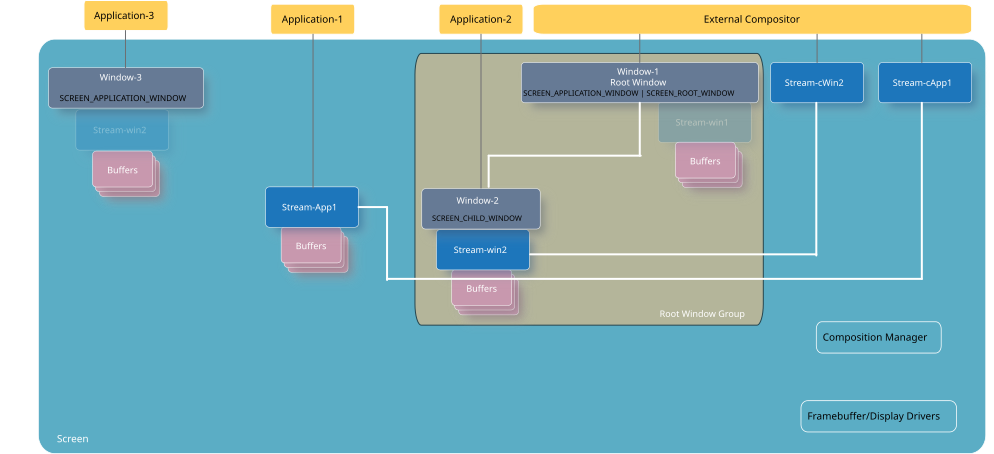
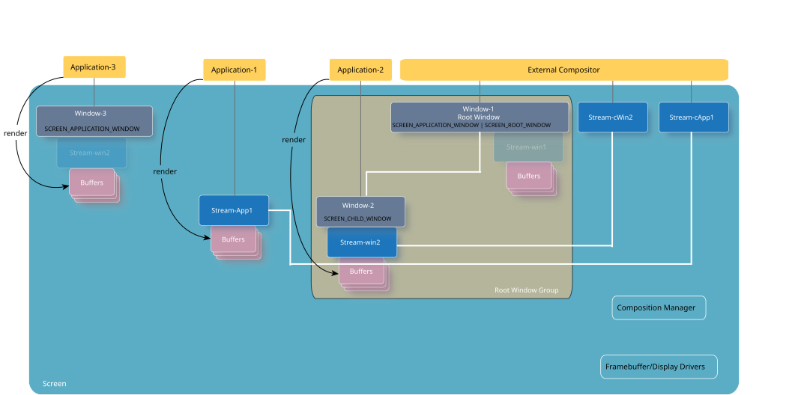
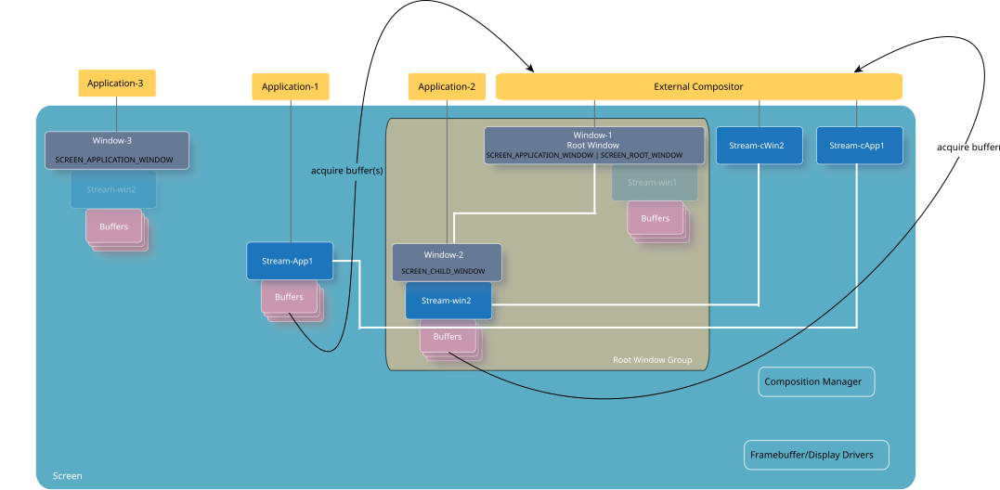
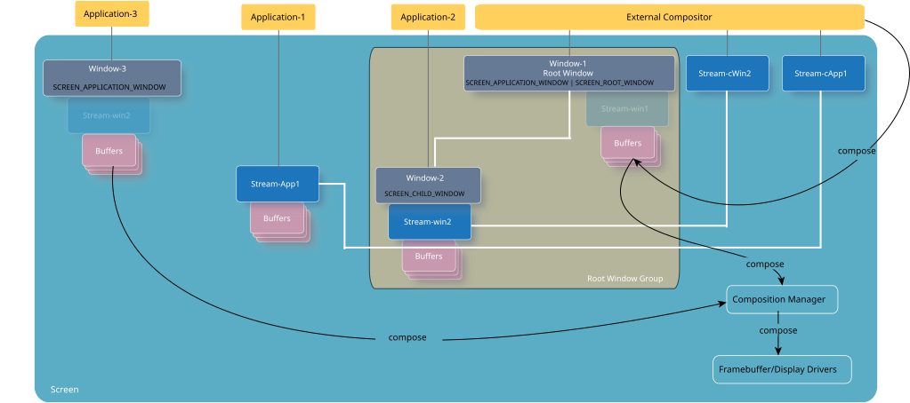

Screen supports external composition (i.e., the use of a compositor that's not Screen) through the use of root windows and streams.
An external compositor is sometimes needed when a desired effect isn't supported by Screen (e.g., page curling effect, rotation effect, reveal effect, etc.). An external compositor provides clients with the ability to implement their own effects. The use of an external compositor is not intended to replace the composition manager component of Screen. Screen's composition manager maintains composing the final scene for display.
An external compositor is essentially a consumer. It consumes content from multiple sources (e.g., windows, streams, or both), and in turn, renders content to its own root window. Because Screen doesn't perform composition on any windows that have a root window as their ancestor, this strategy allows for an external compositor to manage the windows in its root window hierarchy. Using its privileges, as a parent as well as a root, the external compositor's window consumes content from the streams of its child windows. An external compositor can also consume from other producer streams. It then takes the consumed content and composes it into its root window's buffers. Once the external compositor is ready to make its content visible, it calls screen_post_window() to use Screen's framebuffer to show the content on the display.
Generally, you need to perform the following steps in your external compositor to acquire the content from multiple sources:
An external compositor must have a root window to perform composition. Creating a root window prevents Screen from composing the child windows. If the external compositor is consuming from producer streams only, rather than from child windows, it still needs a window to compose into. Use screen_create_window_type() to create a root window. For example:
...
screen_window_t root_window;
...
screen_context_t screen_ctx = NULL;
screen_create_context(&screen_ctx, SCREEN_APPLICATION_CONTEXT);
screen_create_window_type(&root_window, screen_ctx, (SCREEN_APPLICATION_WINDOW | SCREEN_ROOT_WINDOW));
...
In order for the root window to consume the content of its child windows, the SCREEN_PROPERTY_ID property of your root window must be the name of the group that child windows must join. Retrieve this property from the root window by using screen_get_window_property_cv():
char group_name[64] = "";
...
screen_get_window_property_cv(root_window, SCREEN_PROPERTY_ID, sizeof(group_name), group_name);
...
Once you have the root window's group name, ensure that child windows use it to join the external compositor's root window group.
See the "Root windows" section in Window Management for more details on root windows.
Determine the appropriate properties that you need to set on your root window. For example, if you're copying content from the child windows to the root window, then you want to ensure that the SCREEN_PROPERTY_USAGE property is set such that you can perform screen_blit() and/or screen_fill():
...
screen_set_window_property_iv(root_window, SCREEN_PROPERTY_USAGE, (const int[]) { SCREEN_USAGE_NATIVE });
...
You need a set of buffers to render or to compose content into. These buffers contain the composition of the consumed content.
...
screen_create_window_buffers(root_window, 2);
...
An external compositor needs to manage events from all its child windows, and from any streams that it's consuming from.
An external compositor may be consuming content from its child windows, other producer streams, or both. However, a consumer stream can be connected with only one producer stream. Therefore, an external compositor usually needs to manage multiple consumer streams, one for each producer stream.
Handling the SCREEN_EVENT_CREATE eventAn external compositor receives a SCREEN_EVENT_CREATE event when:
An external compositor, typically, does the following upon receipt of a SCREEN_EVENT_CREATE event:
Let's take an example where an external compositor needs to compose content from two different sources: a stream, and a window. In this specific example, Stream-App1 is owned and rendered to by Application-1, and Window-2 is owned and rendered to by Application-2. Application-3 isn't consumed by the external compositor. Window-1 and Window-3 have associated streams, but because they aren't required to be referenced, they're shown faded in the example. You can access their buffers using the window object instead of its stream object.

When Application-1 grants permissions to its producer stream to the external compositor, the external compositor receives a SCREEN_EVENT_CREATE event. Upon receiving this event, the external compositor creates a consumer stream (Stream-cApp1), and connects it to the producer stream (Stream-App1).
When Application-2 joins its window to the root window group, the external compositor receives a SCREEN_EVENT_CREATE event. Upon receiving this event, the external compositor must extract the stream (Stream-win2) from the window (Window-2) because Application-2 is rendering to a window, not to a stream. Then, the external compositor creates a consumer stream (Stream-cWin2), and connects it to the producer stream (Stream-win2). For example:
...
screen_context_t screen_cctx;
screen_create_context(&screen_cctx, SCREEN_APPLICATION_CONTEXT);
...
screen_event_t event; /* Screen event */
screen_stream_t stream_cApp1, stream_cWin2; /* Consumer streams */
screen_window_t win2; /* Window with a producer stream */
screen_stream_t stream_App1, stream_win2; /* Producer streams from the events */
...
/* Create an event so that you can retrieve an event from Screen. */
screen_create_event(&event);
while (1) {
int event_type = SCREEN_EVENT_NONE;
int object_type;
/* Get event from Screen for the consumer's context. */
screen_get_event(screen_cctx, event, -1);
...
/* Get the type of event from the event retrieved. */
screen_get_event_property_iv(event, SCREEN_PROPERTY_TYPE, &event_type);
/* Process the event if it's a SCREEN_EVENT_CREATE event. */
if (event_type == SCREEN_EVENT_CREATE) {
/* Determine if this event is due to a gain of permissions to the producer's stream, or a
* child window joining the root window group. */
screen_get_event_property_iv(event, SCREEN_PROPERTY_OBJECT_TYPE, &object_type);
if (object_type == SCREEN_OBJECT_TYPE_STREAM) {
/* Get the handle for the producer's stream from the event. */
screen_get_event_property_pv(event, SCREEN_PROPERTY_STREAM, (void **)&stream_App1);
/* Create the external compositor's consumer stream. */
screen_create_stream(&stream_cApp1, screen_cctx);
/* Connect the consumer stream to the producer stream. */
screen_consume_stream_buffers(stream_cApp1, 0, stream_App1);
...
/* Register for asynchronous notifications of updates to producer stream, if necessary. */
screen_notify(screen_cctx, SCREEN_NOTIFY_UPDATE, stream_App1, &event);
...
}
if (object_type == SCREEN_OBJECT_TYPE_WINDOW) {
/* Get the handle for the window from the event. */
screen_get_event_property_pv(event, SCREEN_PROPERTY_WINDOW, (void **)&win2);
/* Get the handle for the window's stream from the window. */
screen_get_window_property_pv(win2, SCREEN_PROPERTY_STREAM, (void **) &stream_win2);
/* Create the external compositor's consumer stream. */
screen_create_stream(&stream_cWin2, screen_cctx);
/* Connect the consumer stream to the producer stream. */
screen_consume_stream_buffers(stream_cWin2, 0, stream_win2);
...
/* Register for asynchronous notifications of updates to producer stream, if necessary. */
screen_notify(screen_cctx, SCREEN_NOTIFY_UPDATE, win2, &event);
...
}
...
}
...
}
...
Handling the SCREEN_EVENT_CLOSE event
The external compositor receives a SCREEN_EVENT_CLOSE event when:
An external compositor should do the following upon receipt of a SCREEN_EVENT_CLOSE event:
We recommend that when the external compositor (consumer) receives a SCREEN_EVENT_CLOSE event for a producer stream that it's connected to, it complete its processing, release any acquired buffers, and then destroy the stream. For example:
...
screen_context_t screen_cctx;
screen_create_context(&screen_cctx, SCREEN_APPLICATION_CONTEXT);
...
screen_event_t event; /* Screen event */
screen_stream_t stream_cApp1, stream_cWin2; /* Consumer streams */
screen_window_t win2; /* Window with a producer stream */
screen_stream_t stream_App1, stream_win2; /* Producer streams from the events */
screen_buffer_t acquired_buffer; /* Buffer that's been acquired from a stream */
...
/* Create an event so that you can retrieve an event from Screen. */
screen_create_event(&event);
while (1) {
int event_type = SCREEN_EVENT_NONE;
int object_type;
/* Get event from Screen for the consumer's context. */
screen_get_event(screen_cctx, event, -1);
/* Get the type of event from the event retrieved. */
screen_get_event_property_iv(event, SCREEN_PROPERTY_TYPE, &event_type);
...
/* Process the event if it's a SCREEN_EVENT_CLOSE event. */
if (event_type == SCREEN_EVENT_CLOSE) {
/* Determine if this event is due to a loss of permissions to the producer's stream, or a
* child window leaving the root window group. */
screen_get_event_property_iv(event, SCREEN_PROPERTY_OBJECT_TYPE, &object_type);
/* If the object type is a stream, then this event is due to a loss of permissions to
* access the producer's stream. */
if (object_type == SCREEN_OBJECT_TYPE_STREAM) {
/* Get the handle for the producer's stream from the event. */
screen_get_event_property_pv(event, SCREEN_PROPERTY_STREAM, (void **)&stream_App1);
/* Release any buffers that have been acquired. */
screen_release_buffer(acquired_buffer);
...
/* Unregister asynchronous notifications of updates, if necessary. */
screen_notify(screen_cctx, SCREEN_NOTIFY_UPDATE, stream_App1, NULL);
/* Destroy the consumer stream that's connected to this producer stream. */
screen_destroy_stream(stream_cApp1);
/* Free up any resources that were locally allocated to track this stream. */
screen_destroy_stream(stream_App1);
...
}
if (object_type == SCREEN_OBJECT_TYPE_WINDOW) {
/* Get the handle for the window from the event. */
screen_get_event_property_pv(event, SCREEN_PROPERTY_WINDOW, (void **)&win2);
/* Get the handle for the window's stream from the window.
screen_get_window_property_pv(win2, SCREEN_PROPERTY_STREAM, (void **) &stream_win2);
/* Release any buffers that have been acquired. */
screen_release_buffer(acquired_buffer);
...
/* Unregister for asynchronous notifications of updates, if necessary. */
screen_notify(screen_cctx, SCREEN_NOTIFY_UPDATE, win2, NULL);
/* Destroy the consumer stream that's connected to this producer stream. */
screen_destroy_stream(&stream_cWin2);
/* Free up any resources that were locally allocated to track this stream. */
screen_destroy_stream(stream_win2);
/* Free up any resources that were locally allocated to track this window. */
screen_destroy_stream(win2);
...
}
...
}
...
}
...
In addition to these events, there can be others that are of interest to the external compositor (e.g., SCREEN_EVENT_PROPERTY for property changes). The compositor must handle each event accordingly. It must, at a minimum, handle the SCREEN_EVENT_CREATE and SCREEN_EVENT_CLOSE events.
In our external compositor example, there are three applications that render and produce content: Application-1, Application-2, and Application-3. The content of Application-3 isn't consumed by the external compositor, so we can leave it out of this discussion on acquiring buffers.
As the applications that are producing content render into their targets, they'll each respectively post the content when they're ready. Application-1 calls screen_post_stream(), and Application-2 calls screen_post_window() to post their front buffers.

When front buffers are available for acquiring, the external compositor calls screen_acquire_buffer() to secure access to these buffers. See the "Consumer" section in Using Streams for more details on how a consumer application can acquire buffers.

Remember that streams can't be reconfigured (i.e., buffer size, usage, and format properties can't be changed once a stream has been realized). Windows, however, can resize their buffers (by changing their SCREEN_PROEPRTY_BUFFER_SIZE property). If you're acquiring buffers from a stream that's associated with a window, then it's possible that the window has switched to using a new stream. That's why we recommend that before each time you try to acquire its buffers, you verify that the window's stream hasn't changed. For example:
...
screen_window_t win2; /* Window with a producer stream */
screen_stream_t stream_cWin2; /* Consumer streams /
screen_stream_t prev_stream_win2 /* Producer stream that was last used for acquire */
screen_stream_t stream_win2 /* Producer window stream */
screen_buffer_t acquired_buffer; /* Acquired buffer */
...
/* Get the handle for the window's stream from the window. */
screen_get_window_property_pv(win2, SCREEN_PROPERTY_STREAM, (void **) &stream_win2);
/* Verify if the window's stream has changed since the last time a buffer was acquired. */
if (prev_stream_win2 != stream_win2) {
/* Undo the connection with the previous window stream, and free up any resources
* that were locally allocated to track the window stream. */
screen_destroy_stream_buffers(stream_cWin2);
screen_destroy_stream(prev_stream_win2);
/* Save the window's new stream. */
prev_stream_win2 = stream_win2;
/* Connect the consumer stream to the window's new stream. */
screen_consume_stream_buffers(stream_cWin2, 0, stream_win2);
}
...
screen acquire_buffer(&acquired_buffer, stream_cWin2, NULL, NULL, NULL, 0);
...
When an external compositor has acquired the necessary buffers, it can perform composition using the content of these buffers into the root window buffers. The external compositor can, in addition to composing the content, render additional content into its root window buffers at this point. Refer to the chapter on Rendering for more details on how to render to targets.
In our example, the external compositor is responsible for the composition of the content from Application-1 and Application-2. So, it acquires the content from these applications and composes it into a resulting scene. The final scene from the external compositor is represented in Window-1. When the external compositor is ready to make its window visible, it calls screen_post_window(). The composition manager component of Screen composes the content from the top-level windows (Window-1 and Window-3) into the final resulting scene to the framebuffer. The framebuffer is then passed to the display to show the content. If the only top-level window is that of the external compositor's, then the resulting content from the external compositor still passes through Screen's composition manager, but without any further composition performed by Screen.

Once the external compositor completes processing the producers' front buffer(s), it must release the buffer(s) so that the producers can render again. See the Consumer section in Using Streams for more details on releasing acquired buffers.